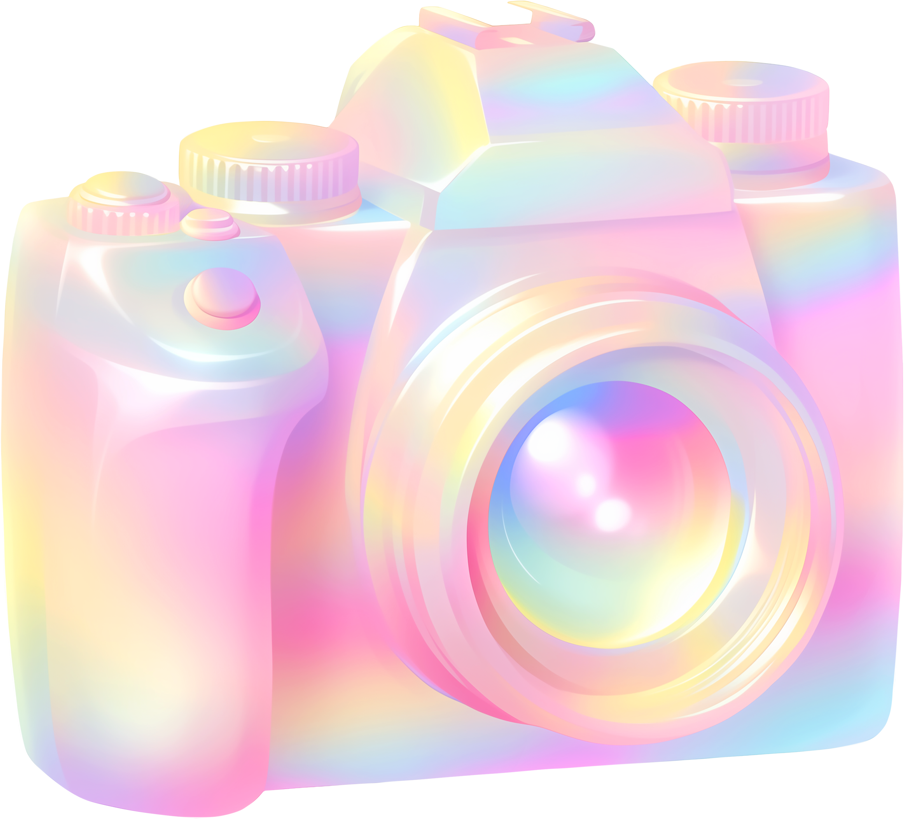

"별을 향한 발걸음, 고양이와 함께"
 우주 비행사가 고양이를 데리고 우주로 향하는 장면이 현실이 됐다. 과학자들은 동물이 우주 환경에서 어떻게 반응하는지 연구하기 위해 고양이를 선택했다. 우주선 안에서 고양이는 무중력 상태에서도 놀라운 적응력을 보였고, 비행사들에게 심리적 안정감을 주었다. 이는 인간과 동물 간 유대가 우주에서도 중요한 역할을 할 수 있음을 보여준다. 앞으로 더 많은 연구가 이 특별한 동행을 밝힐 것으로 기대된다.